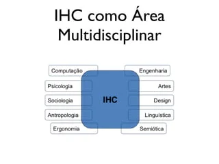

Disciplinas
INTERFACE HUMANO-COMPUTADOR-T01-2024-2 Concluído
Materiais
Vídeo 1 - Videoaula Obrigatória - Módulo 1 - Unidade 1 - Histórico e evolução de IHC sendProfª ministrante: Lucineide Rodrigues da Silva
Conteúdo
Histórico e evolução de IHC (Interação Humano Computador)
Visão geral.
- Os sistemas interativos estão presentes em:
- Eletrodomésticos;
- Carros;
- Relógios;
- Celulares.
- Diferentes sistemas apoiam pessoas em suas atividades.
- Designers precisam estar cientes de que seu trabalho muda a vida das pessoas de formas previsíveis e imprevisíveis;
- O que acontece quando/se o sistema interativo falhar ou ficar indisponível?
O design de sistemas interativos concentra-se na criação de produtos e serviços interativos de excelência que se adequam às necessidades das pessoas e ao seu estilo de vida.
- Designer de sistemas interativos adota visão centrada nas pessoas;
- Pensar no que as pessoas querem fazer;
- Projetar novas maneiras de conectar pessoas;
- Envolver pessoas no processo de design;
- Projetar para a diversidade.
- É essencial compreender as oportunidades para criar maneiras de interação; inovadoras
- Abordagem de fora para dentro.
Interface.
Superfície de contato que reflete as propriedades físicas das partes que interagem, as funções a serem executadas e o balanço entre poder e controle.
- Lugar de contato entre duas entidades;
- No início era o software e o hardware;
- Evoluiu para incluir cognição e emoção da pessoa usuária.
Histórico.
1945- Luzes e cartões perfurados
- Inventores
https://encrypted-tbn0.gstatic.com/images?q=tbn:ANd9GcRdonmt1v7zM0ziYrkY223obb1EfybeYFet5w&s 1945 a 1955
- Linguagem de máquina
- Especialistas
- Programação e batch
https://imagens.ndig.com.br/obsoletos/primeiros_computadores_01.jpg 1955 a 1965
- Assembler
- Profissionais de computação
- Linguagens de comando
https://i.sstatic.net/KUCRU.jpg 1965 a 1980
- Linguagem de alto nível
- Grupos especializados
- Menus e formulários
https://tm.ibxk.com.br/2014/07/03/03135635174391.jpg?ims=1200x675 1980 a 1995
- Linguagens orientadas a problemas/objetos
- Profissionais de todo tipo e curiosos
- WIMP
https://s2-techtudo.glbimg.com/chtBWSXcvmukR2NJDWGq25y_s0g=/0x0:1280x720/924x0/smart/filters:strip_icc()/i.s3.glbimg.com/v1/AUTH_08fbf48bc0524877943fe86e43087e7a/internal_photos/bs/2022/q/P/OXoUeQTNGNNS6EjajaCA/notebook-evolucao.png 1995 a atual
- Linguagens não imperativas
- Todas as pessoas
- Interface não baseada em comandos
https://s2-techtudo.glbimg.com/chtBWSXcvmukR2NJDWGq25y_s0g=/0x0:1280x720/924x0/smart/filters:strip_icc()/i.s3.glbimg.com/v1/AUTH_08fbf48bc0524877943fe86e43087e7a/internal_photos/bs/2022/q/P/OXoUeQTNGNNS6EjajaCA/notebook-evolucao.png
Interação Humano-computador.
Disciplina que estuda o design, avaliação e implementação de sistemas para uso humano e os principais fenômenos que os cercam (Rocha, 2003);
- Surgiu em 1980.
Objetos de estudo da IHC.
Natureza da interação: o que ocorre enquanto as pessoas utilizam sistemas interativos;
Contexto de uso: como a interação é influenciada;
Características humanas: capacidades e limitações no uso;
Arquitetura de sistemas computacionais: como pode favorecer a experiência de uso;
Processo de desenvolvimento: como produzir sistemas interativos de qualidade;
Multidisciplinaridade da IHC.
- Computação:
- A base tecnológica da IHC, envolve o desenvolvimento de sistemas, interfaces e ferramentas que facilitam a interação entre usuários e computadores.
- Psicologia:
- Ajuda a entender como as pessoas percebem, processam e respondem às informações apresentadas nas interfaces, influenciando a criação de interfaces mais intuitivas e amigáveis.
- Sociologia:
- Estuda como as interações sociais e culturais afetam o uso da tecnologia, além de como os sistemas influenciam o comportamento social em diferentes grupos.
- Antropologia:
- Foca no estudo das culturas e comportamentos humanos, ajudando a criar interfaces que se alinhem com práticas e tradições de diferentes sociedades.
- Ergonomia:
- Trata de adaptar a tecnologia ao corpo humano para melhorar o conforto e a eficiência na interação com os dispositivos.
- Engenharia:
- Contribui para a construção e implementação de interfaces robustas, eficientes e escaláveis, garantindo a viabilidade técnica de soluções de IHC.
- Artes:
- Envolve o uso de aspectos estéticos e criativos no design de interfaces, visando a atratividade e a experiência visual.
- Design:
- Focado na criação de interfaces intuitivas e agradáveis, aplicando princípios de usabilidade e acessibilidade.
- Linguística:
- Estuda a linguagem e sua influência na interação, seja na criação de interfaces de voz, textos ou comandos que facilitem o uso por parte dos usuários.
- Semiótica:
- Examina os símbolos e signos usados nas interfaces, como ícones e elementos gráficos, ajudando a criar significados claros e compreensíveis para os usuários.
Benefícios da IHC.
- Aumenta a produtividade dos usuários;
- Reduz o número e a gravidade de erros;
- Reduz o custo de treinamento;
- Reduz o custo de suporte técnico;
- Aumenta as vendas e a fidelidade de clientes.
Referências:
BARBOSA, Simone Diniz Junqueira; SILVA, Bruno Santana da. Interação Humano-Computador. Rio de Janeiro: Elsevier, 2010. Capítulo 1.
BENYON, David. Interação Humano-Computador. 2. ed. São Paulo: Pearson, 2011. ISBN 9788579361098. Capítulo 1. p. 3-12 [versão PDF]. Disponível na Biblioteca Digital da UFMS.
ROCHA, Heloísa Vieira; BARANAUSKAS, Maria Cecília. Design e Avaliação de Interfaces Humano-Computador. São Paulo: UNICAMP, 2003. Capítulo 1. p. 3-23. Disponível em: https://link.ufms.br/ALtLp. Acesso em: 23 ago. 2023.